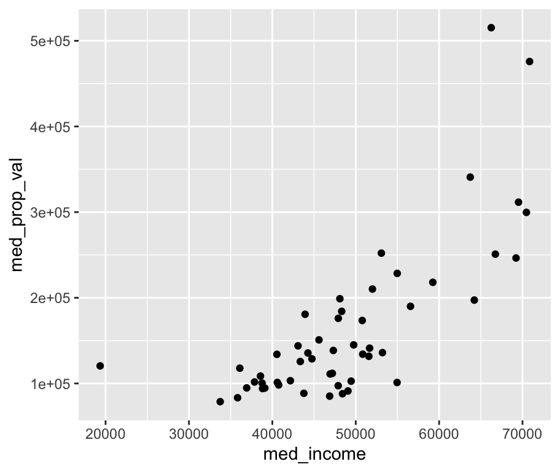
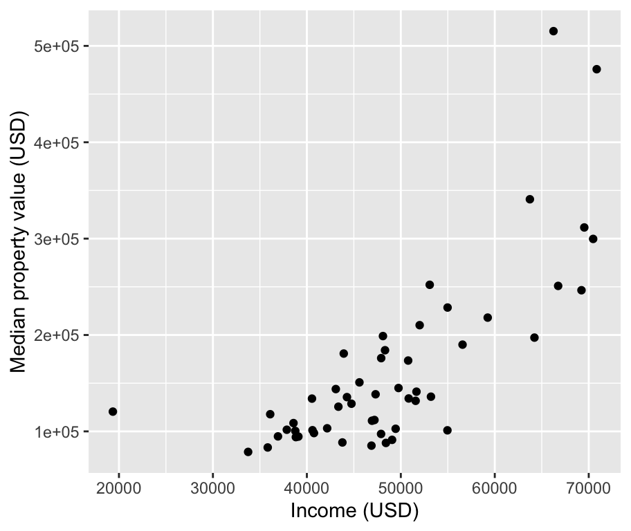
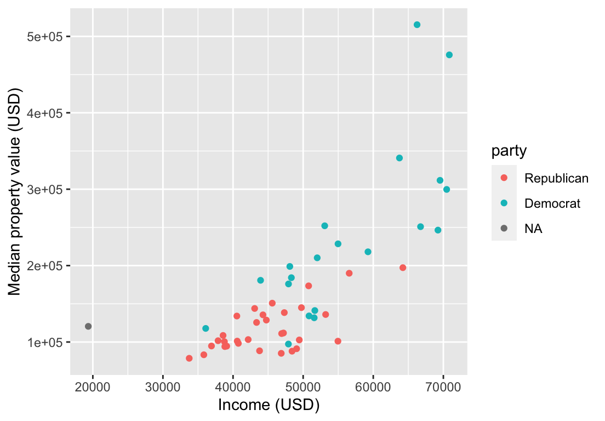
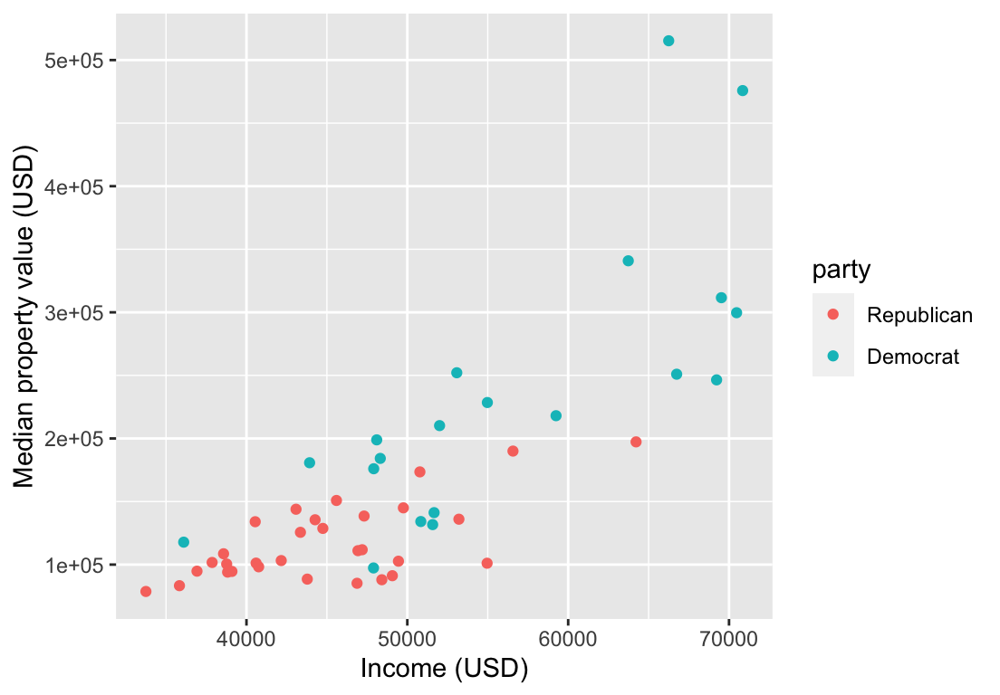
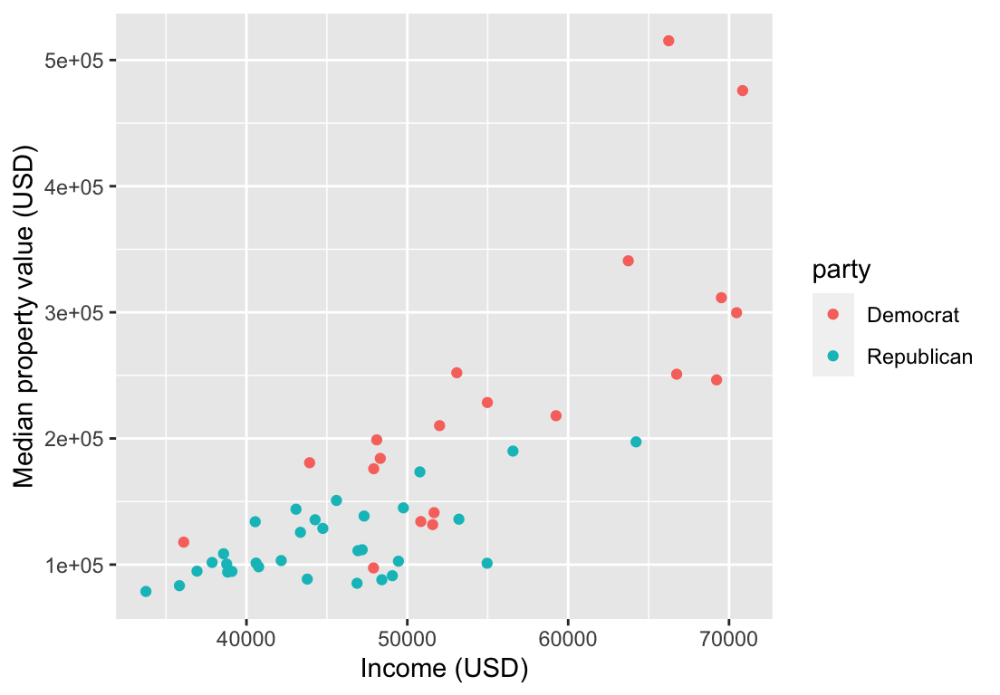

Introduction to Data Science
Chapter 1 Introduction to Data Science
This is an open source textbook aimed at introducing undergraduate students to data science. It was originally written for the University of British Columbia’s DSCI 100 - Introduction to Data Science course. In this book, we define data science as the study and development of reproducible, auditable processes to obtain value (i.e., insight) from data.
The book is structured so that learners spend the first four chapters learning how to use the R programming language and Jupyter notebooks to load, wrangle/clean, and visualize data, while answering descriptive and exploratory data analysis questions. The remaining chapters illustrate how to solve four common problems in data science, which are useful for answering predictive and inferential data analysis questions:
- Predicting a class/category for a new observation/measurement (e.g., cancerous or benign tumour)
- Predicting a value for a new observation/measurement (e.g., 10 km race time for 20 year old females with a BMI of 25).
- Finding previously unknown/unlabelled subgroups in your data (e.g., products commonly bought together on Amazon)
- Estimating an average or a proportion from a representative sample (group of people or units) and using that estimate to generalize to the broader population (e.g., the proportion of undergraduate students that own an iphone)
For each of these problems, we map them to the type of data analysis question being asked and discuss what kinds of data are needed to answer such questions. More advanced (e.g., causal or mechanistic) data analysis questions are beyond the scope of this text.
Types of data analysis questions
| Question type | Description | Example |
|---|---|---|
| Descriptive | A question which asks about summarized characteristics of a data set without interpretation (i.e., report a fact). | How many people live in each US state? |
| Exploratory | A question asks if there are patterns, trends, or relationships within a single data set. Often used to propose hypotheses for future study. | Does politcal party voting change with indicators of wealth in a set of data collected from groups of individuals from several regions in the United States? |
| Inferential | A question that looks for patterns, trends, or relationships in a single data set and also asks for quantification of how applicable these findings are to the wider population. | Does politcal party voting change with indicators of wealth in the United States? |
| Predictive | A question that asks about predicting measurements or labels for individuals (people or things). The focus is on what things predict some outcome, but not what causes the outcome. | What political party will someone vote for in the next US election? |
| Causal | A question that asks about whether changing one factor will lead to a change in another factor, on average, in the wider population. | Does wealth lead to voting for a certain political party candidate in the US Presidential election? |
| Mechanistic | A question that asks about the underlying mechanism of the observed patterns, trends, or relationship (i.e., how does it happen?) | How does wealth lead to voting for a certain political party candidate in the US Presidential election? |
Source: What is the question? by Jeffery T. Leek, Roger D. Peng & The Art of Data Science by Roger Peng & Elizabeth Matsui
1.1 Chapter learning objectives
By the end of the chapter, students will be able to:
- use a Jupyter notebook to execute provided R code
- edit code and markdown cells in a Jupyter notebook
- create new code and markdown cells in a Jupyter notebook
- load the
tidyverselibrary into R - create new variables and objects in R using the assignment symbol
- use the help and documentation tools in R
- match the names of the following functions from the
tidyverselibrary to their documentation descriptions:read_csvselectmutatefilterggplotaes
1.2 Jupyter notebooks
Jupyter notebooks are documents that contain a mix of computer code (and its output) and formattable text. Given that they are able to combine these two in a single document—code is not separate from the output or written report—notebooks are one of the leading tools to create reproducible data analyses. A reproducible data analysis is one where you can reliably and easily recreate the same results when analyzing the same data. Although this sounds like something that should always be true of any data analysis, in reality this is not often the case; one needs to make a conscious effort to perform data analysis in a reproducible manner.
The name Jupyter came from combining the names of the three programming language that it was initially targeted for (Julia, Python, and R), and now many other languages can be used with Jupyter notebooks.
A notebook looks like this:

We have included a short demo video here to help you get started and to introduce you to R and Jupyter. However, the best way to learn how to write and run code and formattable text in a Jupyter notebook is to do it yourself! Here is a worksheet that provides a step-by-step guide through the basics.
1.3 Loading a spreadsheet-like dataset
Often, the first thing we need to do in data analysis is to load a dataset into R. When we bring spreadsheet-like (think Microsoft Excel tables) data, generally shaped like a rectangle, into R it is represented as what we call a data frame object. It is very similar to a spreadsheet where the rows are the collected observations and the columns are the variables.

The first kind of data we will learn how to load into R (as a data frame) is the
spreadsheet-like comma-separated values format (.csv for short).
These files have names ending in .csv, and can be opened open and saved from common spreadsheet programs like Microsoft Excel and Google Sheets.
For example, a .csv file named state_property_vote.csv is included with the code for this book.
This file— originally from Data USA—has US state-level property, income, population and voting data from 2015 and 2016.
If we were to open this data in a plain text editor, we would see each row on its own line, and each entry in the table separated by a comma:
state,med_income,med_prop_val,population,mean_commute_minutes,party
AK,64222,197300,733375,10.46830207,Republican
AL,36924,94800,4830620,25.30990746,Republican
AR,35833,83300,2958208,22.40108933,Republican
AZ,44748,128700,6641928,20.58786,Republican
CA,53075,252100,38421464,23.38085172,Democrat
CO,48098,198900,5278906,19.50792188,Democrat
CT,69228,246450,3593222,24.349675,Democrat
DC,70848,475800,647484,28.2534,Democrat
DE,54976,228500,926454,24.45553333,DemocratTo load this data into R, and then to do anything else with it afterwards, we will need to use something called a function.
A function is a special word in R that takes in instructions (we call these arguments) and does something. The function we will
use to read a .csv file into R is called read_csv.
In its most basic use-case, read_csv expects that the data file:
- has column names (or headers),
- uses a comma (
,) to separate the columns, and - does not have row names.
Below you’ll see the code used to load the data into R using the read_csv function. But there is one extra step we need to do first. Since read_csv is not included in the base installation of R,
to be able to use it we have to load it from somewhere else: a collection of useful functions known as a library. The read_csv function in particular
is in the tidyverse library (more on this later), which we load using the library function.
Next, we call the read_csv function and pass it a single argument: the name of the file, "state_property_vote.csv". We have to put quotes around filenames and other letters and words that we
use in our code to distinguish it from the special words that make up R programming language. This is the only argument we need to provide for this file, because our file satifies everthing else
the read_csv function expects in the default use-case (which we just discussed). Later in the course, we’ll learn more about how to deal with more complicated files where the default arguments are not
appropriate. For example, files that use spaces or tabs to separate the columns, or with no column names.
clicking the below button will make this book interactive and that could take some times to strat. Be patient…
us_data <- readr::read_csv("https://raw.githubusercontent.com/UBC-DSCI/introduction-to-datascience/master/state_property_vote.csv")## Parsed with column specification:
## cols(
## state = col_character(),
## med_income = col_double(),
## med_prop_val = col_double(),
## population = col_double(),
## mean_commute_minutes = col_double(),
## party = col_character()
## )## ── Attaching packages ────────────────────────────────────────────────────────────── tidyverse 1.3.0 ──## ✓ ggplot2 3.3.2 ✓ purrr 0.3.4
## ✓ tibble 3.0.3 ✓ dplyr 1.0.1
## ✓ tidyr 1.1.1 ✓ stringr 1.4.0
## ✓ readr 1.3.1.9000## ── Conflicts ───────────────────────────────────────────────────────────────── tidyverse_conflicts() ──
## x dplyr::filter() masks stats::filter()
## x dplyr::lag() masks stats::lag()## Parsed with column specification:
## cols(
## state = col_character(),
## med_income = col_double(),
## med_prop_val = col_double(),
## population = col_double(),
## mean_commute_minutes = col_double(),
## party = col_character()
## )## # A tibble: 52 x 6
## state med_income med_prop_val population mean_commute_minutes party
## <chr> <dbl> <dbl> <dbl> <dbl> <chr>
## 1 AK 64222 197300 733375 10.5 Republican
## 2 AL 36924 94800 4830620 25.3 Republican
## 3 AR 35833 83300 2958208 22.4 Republican
## 4 AZ 44748 128700 6641928 20.6 Republican
## 5 CA 53075 252100 38421464 23.4 Democrat
## 6 CO 48098 198900 5278906 19.5 Democrat
## 7 CT 69228 246450 3593222 24.3 Democrat
## 8 DC 70848 475800 647484 28.3 Democrat
## 9 DE 54976 228500 926454 24.5 Democrat
## 10 FL 43355 125600 19645772 24.8 Republican
## # … with 42 more rowsAbove you can also see something neat that Jupyter does to help us understand our code: it colours text depending on its meaning in R. For example, you’ll note that functions get bold green text, while letters and words surrounded by quotations like filenames get blue text.
In case you want to know more (optional): We use the
read_csvfunction from thetidyverseinstead of the base R functionread.csvbecause it’s faster and it creates a nicer variant of the base R data frame called a tibble. This has several benefits that we’ll discuss in further detail later in the course.
1.4 Assigning value to a data frame
When we loaded the US state-level property, income, population, and voting data in R above using read_csv, we did not give this data frame a name, so it was
just printed to the screen and we cannot do anything else with it. That isn’t very useful; what we would like to do is give a name to the data frame that read_csv outputs
so that we can use it later for analysis and visualization.
To assign name to something in R, there are two possible ways—using either the assignment symbol (<-) or the equals symbol (=). From a style perspective,
the assignment symbol is preferred and is what we will use in this course. When we name something in R using the assignment symbol, <-, we do not need to surround
it with quotes like the filename. This is because we are formally telling R about this word and giving it a value. Only characters and words that act as values need
to be surrounded by quotes.
Let’s now use the assignment symbol to give the name us_data to the US state-level property, income, population, and voting data frame that we get from read_csv.
Wait a minute! Nothing happened this time! Or at least it looks like that. But actually something did happen: the data was read in and now has the name us_data associated with it.
And we can use that name to access the data frame and do things with it. First we will type the name of the data frame to print it to the screen.
## # A tibble: 52 x 6
## state med_income med_prop_val population mean_commute_minutes party
## <chr> <dbl> <dbl> <dbl> <dbl> <chr>
## 1 AK 64222 197300 733375 10.5 Republican
## 2 AL 36924 94800 4830620 25.3 Republican
## 3 AR 35833 83300 2958208 22.4 Republican
## 4 AZ 44748 128700 6641928 20.6 Republican
## 5 CA 53075 252100 38421464 23.4 Democrat
## 6 CO 48098 198900 5278906 19.5 Democrat
## 7 CT 69228 246450 3593222 24.3 Democrat
## 8 DC 70848 475800 647484 28.3 Democrat
## 9 DE 54976 228500 926454 24.5 Democrat
## 10 FL 43355 125600 19645772 24.8 Republican
## # … with 42 more rows1.5 Creating subsets of data frames with select & filter
Now, we are going to learn how to obtain subsets of data from a data frame in R using two other tidyverse functions: select and filter.
The select function allows you to create a subset of the columns of a data frame, while the filter function allows you to obtain a subset of the rows with specific values.
Before we start using select and filter, let’s take a look at the US state-level property, income, and population data again to familiarize ourselves with it.
We will do this by printing the data we loaded earlier in the chapter to the screen.
## # A tibble: 52 x 6
## state med_income med_prop_val population mean_commute_minutes party
## <chr> <dbl> <dbl> <dbl> <dbl> <chr>
## 1 AK 64222 197300 733375 10.5 Republican
## 2 AL 36924 94800 4830620 25.3 Republican
## 3 AR 35833 83300 2958208 22.4 Republican
## 4 AZ 44748 128700 6641928 20.6 Republican
## 5 CA 53075 252100 38421464 23.4 Democrat
## 6 CO 48098 198900 5278906 19.5 Democrat
## 7 CT 69228 246450 3593222 24.3 Democrat
## 8 DC 70848 475800 647484 28.3 Democrat
## 9 DE 54976 228500 926454 24.5 Democrat
## 10 FL 43355 125600 19645772 24.8 Republican
## # … with 42 more rowsIn this data frame there are 52 rows (corresponding to the 50 US states, the District of Columbia and the US territory, Puerto Rico) and 6 columns:
- US state abbreviation
- Median household income
- Median property value
- US state population
- Mean commute time in minutes
- The party each state voted for in the 2016 US presidential election
Now let’s use select to extract the state column from this data frame. To do this, we need to provide the select function with two arguments. The first argument is the
name of the data frame object, which in this example is us_data. The second argument is the column name that we want to select, here state. After passing these two arguments,
the select function returns a single column (the state column that we asked for) as a data frame.
## # A tibble: 52 x 1
## state
## <chr>
## 1 AK
## 2 AL
## 3 AR
## 4 AZ
## 5 CA
## 6 CO
## 7 CT
## 8 DC
## 9 DE
## 10 FL
## # … with 42 more rows1.5.1 Using select to extract multiple columns
We can also use select to obtain a subset of the data frame with multiple columns. Again, the first argument is the name of the data frame.
Then we list all the columns we want as arguments separated by commas. Here we create a subset of three columns: state, median property value, and mean commute time in minutes.
## # A tibble: 52 x 3
## state med_prop_val mean_commute_minutes
## <chr> <dbl> <dbl>
## 1 AK 197300 10.5
## 2 AL 94800 25.3
## 3 AR 83300 22.4
## 4 AZ 128700 20.6
## 5 CA 252100 23.4
## 6 CO 198900 19.5
## 7 CT 246450 24.3
## 8 DC 475800 28.3
## 9 DE 228500 24.5
## 10 FL 125600 24.8
## # … with 42 more rows1.5.2 Using select to extract a range of columns
We can also use select to obtain a subset of the data frame constructed from a range of columns. To do this we use the colon (:) operator to denote the range.
For example, to get all the columns in the data frame from state to med_prop_val we pass state:med_prop_val as the second argument to the select function.
## # A tibble: 52 x 3
## state med_income med_prop_val
## <chr> <dbl> <dbl>
## 1 AK 64222 197300
## 2 AL 36924 94800
## 3 AR 35833 83300
## 4 AZ 44748 128700
## 5 CA 53075 252100
## 6 CO 48098 198900
## 7 CT 69228 246450
## 8 DC 70848 475800
## 9 DE 54976 228500
## 10 FL 43355 125600
## # … with 42 more rows1.5.3 Using filter to extract a single row
We can use the filter function to obtain the subset of rows with desired values from a data frame. Again, our first argument is the name of the data frame object, us_data.
The second argument is a logical statement to use when filtering the rows. Here, for example, we’ll say that we are interested in rows where state equals NY (for New York). To make
this comparison, we use the equivalency operator == to compare the values of the state column with the value "NY". Similar to when we loaded the data file and put quotes around the filename,
here we need to put quotes around "NY" to tell R that this is a character value and not one of the special words that make up R programming language, nor one of the names
we have given to data frames in the code we have already written.
With these arguments, filter returns a data frame that has all the columns of the input data frame but only the rows we asked for in our logical filter statement.
## # A tibble: 1 x 6
## state med_income med_prop_val population mean_commute_minutes party
## <chr> <dbl> <dbl> <dbl> <dbl> <chr>
## 1 NY 50839 134150 19673174 24.4 Democrat1.5.4 Using filter to extract rows with values above a threshold
If we are interested in finding information about the states who have a longer mean commute time than New York—whose mean commute time is 21.5 minutes—then we can create a filter
to obtain rows where the value of mean_commute_minutes is greater than 21.5.
In this case, we see that filter returns a data frame with 33 rows; this indicates that there are 33
states with longer commute times on average than New York.
## # A tibble: 33 x 6
## state med_income med_prop_val population mean_commute_minutes party
## <chr> <dbl> <dbl> <dbl> <dbl> <chr>
## 1 AL 36924 94800 4830620 25.3 Republican
## 2 AR 35833 83300 2958208 22.4 Republican
## 3 CA 53075 252100 38421464 23.4 Democrat
## 4 CT 69228 246450 3593222 24.3 Democrat
## 5 DC 70848 475800 647484 28.3 Democrat
## 6 DE 54976 228500 926454 24.5 Democrat
## 7 FL 43355 125600 19645772 24.8 Republican
## 8 GA 37865 101700 10006693 24.5 Republican
## 9 IL 47898 97350 12873761 22.6 Democrat
## 10 IN 47194 111800 6568645 23.5 Republican
## # … with 23 more rows1.6 Exploring data with visualizations
Creating effective data visualizations is an essential piece to any data analysis. For the remainder of Chapter 1, we will learn how to use
functions from the tidyverse to make visualizations that let us explore relationships in data. In particular, we’ll develop a visualization
of the US property, income, population, and voting data we’ve been working with that will help us understand two potential relationships in the data:
first, the relationship between median household income and median propery value across the US, and second, whether there is a pattern in which party each state
voted for in the 2016 US election. This is an example of an exploratory data analysis
question: we are looking for relationships and patterns within the data set we have, but are not trying to generalize what we find beyond this data set.
1.6.1 Using ggplot to create a scatter plot
Taking another look at our dataset below, we can immediately see that the three columns (or variables) we are interested in visualizing—median household
income, median property value, and election result—are all in separate columns. In addition, there is a single row (or observation) for each state.
The data are therefore in what we call a tidy data format.
This is particularly important and will be a major focus in the remainder of this course: many of the functions from tidyverse require tidy data,
including the ggplot function that we will use shortly for our visualization. Note below that we use the print function to display the us_data rather
than just typing us_data; for data frames, these do the same thing.
## # A tibble: 52 x 6
## state med_income med_prop_val population mean_commute_minutes party
## <chr> <dbl> <dbl> <dbl> <dbl> <chr>
## 1 AK 64222 197300 733375 10.5 Republican
## 2 AL 36924 94800 4830620 25.3 Republican
## 3 AR 35833 83300 2958208 22.4 Republican
## 4 AZ 44748 128700 6641928 20.6 Republican
## 5 CA 53075 252100 38421464 23.4 Democrat
## 6 CO 48098 198900 5278906 19.5 Democrat
## 7 CT 69228 246450 3593222 24.3 Democrat
## 8 DC 70848 475800 647484 28.3 Democrat
## 9 DE 54976 228500 926454 24.5 Democrat
## 10 FL 43355 125600 19645772 24.8 Republican
## # … with 42 more rows1.6.2 Using ggplot to create a scatter plot
We will begin with a scatter plot of the income and property value columns from our data frame.
To create a scatter plot of these two variables using the ggplot function, we do the following:
- call the
ggplotfunction - provide the name of the data frame as the first argument
- call the aesthetic function,
aes, to specify which column will correspond to the x-axis and which will correspond to the y-axis - add a
+symbol at the end of theggplotcall to add a layer to the plot - call the
geom_pointfunction to tell R that we want to represent the data points as dots/points to create a scatter plot.

In case you have used R before and are curious: There are a small number of situations in which you can have a single R expression span multiple lines. Here, the
+symbol at the end of the first line tells R that the expression isn’t done yet and to continue reading on the next line. While not strictly necessary, this sort of pattern will appear a lot when usingggplotas it keeps things more readable.
1.6.3 Formatting ggplot objects
One common and easy way to format your ggplot visualization is to add additional layers to the plot object using the + symbol.
For example, we can use the xlab and ylab functions to add layers where we specify human readable labels for the x and y axes.
Again, since we are specifying words (e.g. "Income (USD)") as arguments to xlab and ylab, we surround them with double quotes.
There are many more layers we can add to format the plot further, and we will explore these in later chapters.
ggplot(us_data, aes(x = med_income, y = med_prop_val)) +
geom_point() +
xlab("Income (USD)") +
ylab("Median property value (USD)") 
From this visualization we see that for the 52 US regions in this data set, as median household income increases so does median property value. When we see two variables do this, we call this a positive relationship. Because the increasing pattern is fairly clear (not fuzzy) we can say that the relationship is strong. Because of the data point in the lower left-hand corner, drawing a straight line through these points wouldn’t fit very well. When a straight-line doesn’t fit the data well we say that it’s non-linear. However, we should have caution when using one point to claim non-linearity. As we will see later, this might be due to a single point not really belonging in the data set (this is often called an outlier).
Learning how to describe data visualizations is a very useful skill. We will provide descriptions for you in this course (as we did above) until we get to Chapter 4, which focuses on data visualization. Then, we will explicitly teach you how to do this yourself, and how to not over-state or over-interpret the results from a visualization.
1.6.4 Coloring points by group
Now we’ll move onto the second part of our exploratory data analysis question: when considering the relationship between median household income and median property
value, is there a pattern in which party each state voted for in the 2016 US election? One common way to explore this is to colour the data points on the
scatter plot we have already created by group/category. For example,
given that we have the party each state voted for in the 2016 US Presidential election in the column named party, we can colour the points in our previous
scatter plot to represent who each stated voted for.
To do this we modify our scatter plot code above. Specifically, we will add an argument to the aes function, specifying that the points should be coloured by the party column:
ggplot(us_data, aes(x = med_income, y = med_prop_val, color = party)) +
geom_point() +
xlab("Income (USD)") +
ylab("Median property value (USD)")
This data visualization shows that the one data point we singled out earlier on the far left of the plot has the label of “not applicable” instead of “democrat” or “republican”. Let’s use filter to look at the row that contains the “not applicable” value in the party column:
## # A tibble: 0 x 6
## # … with 6 variables: state <chr>, med_income <dbl>, med_prop_val <dbl>,
## # population <dbl>, mean_commute_minutes <dbl>, party <fct>That explains it! That row in the dataset is actually not a US state, but rather the US territory of Peurto Rico. Similar to other US territories, residents of Puerto Rico
cannot vote in presidential elections. Hence the “not applicable” label. Let’s remove this row from the data frame and rename the data frame vote_data.
To do this, we use the opposite of the equivalency operator (==) for our filter statement, the not equivalent operator (!=).
## # A tibble: 51 x 6
## state med_income med_prop_val population mean_commute_minutes party
## <chr> <dbl> <dbl> <dbl> <dbl> <fct>
## 1 AK 64222 197300 733375 10.5 Republican
## 2 AL 36924 94800 4830620 25.3 Republican
## 3 AR 35833 83300 2958208 22.4 Republican
## 4 AZ 44748 128700 6641928 20.6 Republican
## 5 CA 53075 252100 38421464 23.4 Democrat
## 6 CO 48098 198900 5278906 19.5 Democrat
## 7 CT 69228 246450 3593222 24.3 Democrat
## 8 DC 70848 475800 647484 28.3 Democrat
## 9 DE 54976 228500 926454 24.5 Democrat
## 10 FL 43355 125600 19645772 24.8 Republican
## # … with 41 more rowsNow we see that the data frame has 51 rows corresponding to the 50 states and the District of Columbia - all regions where residents can vote in US presidential elections. Let’s now recreate the scatter plot we made above using this data frame subset:
ggplot(vote_data, aes(x = med_income, y = med_prop_val, color = party)) +
geom_point() +
xlab("Income (USD)") +
ylab("Median property value (USD)")
What do we see when considering the second part of our exploratory question? Do we see a pattern in how certain states voted in the 2016 Presidential election? We do! Most of the US States who voted for the Republican candidate in the 2016 US Presidential election had lower median household income and lower median property values (data points primarily fall in lower left-hand side of the scatter plot), whereas most of the US states who voted for the Democratic candidate in the 2016 US Presidential election had higher median household income and higher median property values (data points primarily fall in the upper right-hand side of the scatter plot).
Does this mean that rich states usually vote for Democrats and poorer states generally vote for Republicans? Or could we use this data visualization on its own to predict which party each state will vote for in the next presidential election? The answer to both these questions is “no.” What we can do with this exploratory data analysis is create new hypotheses, ideas, and questions (like the ones at the beginning of this paragraph). Answering those questions would likely involve gathering additional data and doing more complex analyses, which we will see more of later in this course.
1.6.5 Putting it all together
Below, we put everything from this chapter together in one code chunk. This demonstrates the power of R: in relatively few lines of code, we are able to create an entire data science workflow.
library(tidyverse)
us_data <- read_csv("state_property_vote.csv")
vote_data <- filter(us_data, party != "Not Applicable")
ggplot(vote_data, aes(x = med_income, y = med_prop_val, color = party)) +
geom_point() +
xlab("Income (USD)") +
ylab("Median property value (USD)")
1.6.6 What’s next?
In the next chapter, we will dig in and spend more time learning how to load spreadsheet-like datasets of various formats into R, as well as how to scrape data from the web!